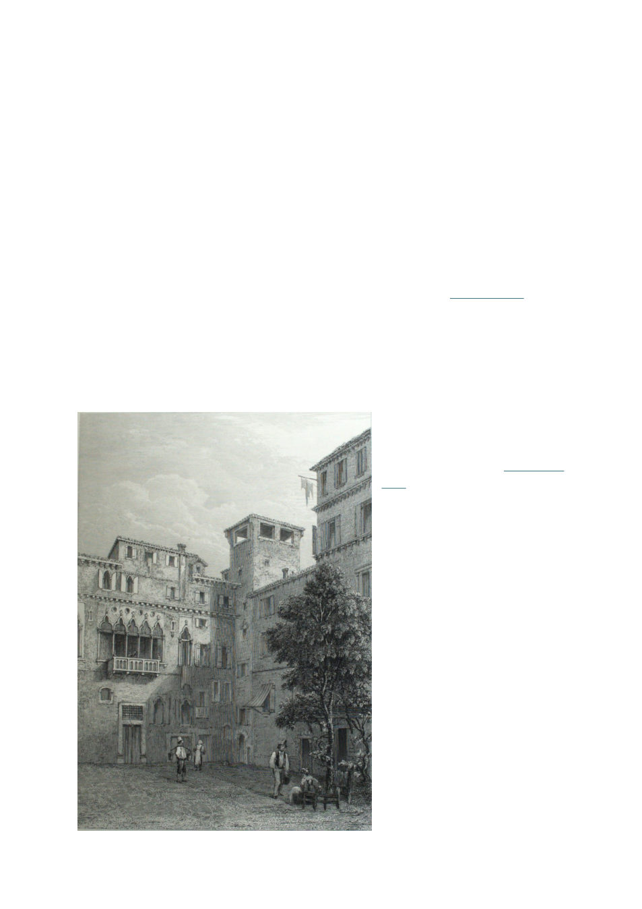

demonstration of its capabilities but
unfortunately most of what I might want from
it were creating models of bee mite
population growth and such, and Fable would
not talk to me about anything biology related,
that’s all Forbidden Knowledge. But people
on Twitter were talking about how it “one
shotted” making a tacky minecraft clone for
them (kind of dumb brag really, it can discern
how any previous game was made and so of
course it can “one shot” a remake of it). But
that gave me an idea!
I asked Fable to make said Silk Road
Oregon Trail game, and verily, it did produce
the basic game. But that was only the
beginning of my journey. I bought up silk
and tea in Chang’an and set out west with my
generic camels, and alas I died of thirst
somewhere in the Taklamakan Desert. Start
again and the journey continues and
continues, as I added more and more details--
generic camels expanded first into distinct
bactrians, dromedaries, and I learned there’s
a hybrid type between them, horses, mules
and donkeys, and eventually yaks and, as I
forged a muddy trail along the historic Grand
Trunk Road through India, water buffalos
(taking them into the desert is NOT advised).
It began with just silk, tea, paper,
musk and jade. As my later caravans made
their way through the Hexi Corridor toward
another attempt. I discovered rhubarb was
actually a historical product traded from that
area west all the way to the Levant (via
obsessively reading sources on the locations
already included). Bypassing the Tarim
Basin to the north this time, I discovered a
Chinese wine region in Turfan,
and pressed on around the
mountains to the north through the
blasting winds of the Dzungarian
Gate. This northern pass is harsh at
the best of times, but I also made it
climate aware, plugging in climate
models to accurately depict what
weather you’d encounter where
based on actual data (this also
touched too closely on Forbidden
Knowledge and Fable refused to
help). Don’t venture northern
routes in winter without fur coats
and if you need to cross the
mountain passes it may be best to
wait in Samarkand, nor is summer
the best time to cross the deserts.
Onward my snorting
bactrians trudged across the endless
steppes of Transoxiana, and I
discovered the value of lapis,
turqoise, and saffron. Ultimately
50 trade goods were introduced